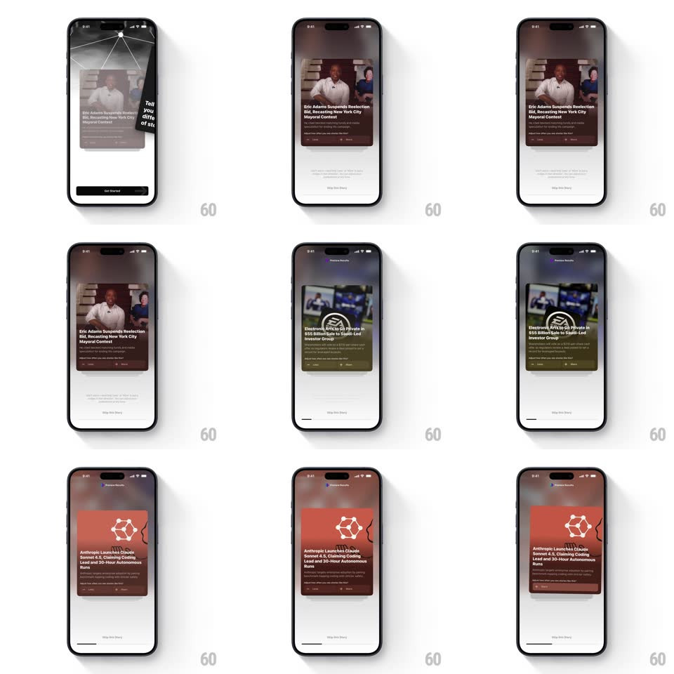

Media
Frame-by-frame

Rebuild this interaction 1:1: Particle's card swipe onboarding - swiping through full-height news cards (Eric Adams, Electronic Arts, Anthropic Claude Sonnet 4.5) makes the background gradient morph to each card's color theme while the next card peeks up from behind.

Rebuild this interaction 1:1: Particle's card swipe onboarding - swiping through full-height news cards (Eric Adams, Electronic Arts, Anthropic Claude Sonnet 4.5) makes the background gradient morph to each card's color theme while the next card peeks up from behind.
## Integration
Integration: stack-agnostic spec - springs given as stiffness/damping, timed motions as duration + curve; map every value to your framework and animation library of choice.
## Scene
Light screen: a node-network motif (dots and connecting lines) across the top, a stack of tall rounded news cards in the center (image, headline, source row, read-time), and a "Get Started" / progress control at bottom. Card themes: maroon-red for Eric Adams, olive-green for Electronic Arts, red-orange for Anthropic.
## Motion spec
Pattern: swipe stack with ambient color sync, gesture-driven.
- Drag: the top card follows the finger 1:1 with rotation (+-8deg); the next card scales up (0.94 -> 1) and rises as it nears front.
- Background: the top-of-screen gradient blends continuously toward the front card's theme color (crossfade tied to drag distance, completes in 300ms).
- Commit: past 35% travel or 300px/s fling, the card flies off (300ms, ease-out) and the next settles (spring ~320/22).
- Reject: below threshold the card springs back to center (spring ~300/20).
- Onboarding card: the first black copy card ("Tell us how often you want to see different types of stories") swipes the same way.
## Calibration
- The background color is position-driven - partial drags tint it partially.
- Exactly one card peeks behind the front card; deeper cards are hidden.
## Reduced motion
Cards fade off (250ms); background crossfades (300ms) without drag tracking.
## Don't miss
- The tint sync is the signature - background and card never disagree on color.
- The node motif stays fixed; only its wash changes color.